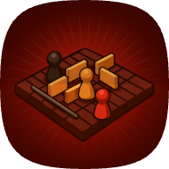

Privacy policy
سياسة الخصوصية
Quoridor is a board game by Mohager. It has no ads, no analytics and no tracking, and it never sells or shares your data. This page lists everything the game stores and why.
Playing on your device
Games against the computer or with friends on one device stay on that device. Your settings (theme, language, sound, players you blocked) and your saved game are kept only there.
Playing online
Online games run on Google Firebase. To play, the app signs in anonymously: Firebase gives the app a random account ID. It never asks for your email, phone number or real name. These are stored so the game works:
| What | Why |
|---|---|
| Your random account ID and player name | To seat you in a game and show your name to the other players |
| The game: room code, moves, turn timer, result | To play the game on every player's screen |
| The last time your app checked in | To tell the others when a player has left |
| Chat messages: a reaction or a short typed line, with the time | To show them to the players in that game |
| Reports: the reported message and both players' account IDs | So we can review messages players report |
Only the players in a game can read its moves and chat. Reports can be read only by us.
Chat safety
Chat happens only between people who share a private game code. Offensive words are masked, any message can be reported, and any player can be blocked or muted.
Camera
The camera is used only when you choose to scan an invite QR code. The picture is read on your device and is never stored or sent.
Update check
The app downloads a small version file from GitHub to tell you when a new version is out. GitHub sees that request, as with any web page.
Children
The game is suitable for everyone. It collects no personal information from anyone, children included.
Keeping and deleting data
Online games, their chat and reports stay on the server. To have your data deleted, or to ask anything about this policy, open an issue at github.com/3shmawi/quoridor/issues with your room code and player name. We will delete it within 30 days.
Changes
If this policy changes, the new version will be posted on this page with a new date.
كوريدور لعبة لوح من Mohager. مفيهاش إعلانات ولا تحليلات ولا تتبّع، ومش بنبيع أو نشارك بياناتك مع حد. الصفحة دي فيها كل حاجة اللعبة بتحفظها وليه.
اللعب على جهازك
اللعب ضد الكمبيوتر أو مع صحابك على نفس الجهاز بيفضل على الجهاز ده. الإعدادات (الشكل، اللغة، الصوت، اللاعبين اللي حظرتهم) واللعبة المحفوظة بيتحفظوا على الجهاز بس.
اللعب أونلاين
اللعب الأونلاين شغّال على Google Firebase. عشان تلعب، التطبيق بيسجّل دخول من غير اسم: Firebase بيدّي التطبيق رقم حساب عشوائي. التطبيق عمره ما بيطلب إيميلك أو رقمك أو اسمك الحقيقي. ودي الحاجات اللي بتتحفظ عشان اللعبة تشتغل:
| إيه | ليه |
|---|---|
| رقم حسابك العشوائي واسم اللاعب | عشان تقعد في اللعبة واللاعبين التانيين يشوفوا اسمك |
| اللعبة: كود الأوضة، الحركات، وقت الدور، النتيجة | عشان اللعبة تظهر على شاشة كل لاعب |
| آخر مرة تطبيقك اتصل | عشان الباقيين يعرفوا لو لاعب خرج |
| رسايل الدردشة: رياكشن أو سطر قصير مكتوب، ووقته | عشان تظهر للاعبين في اللعبة دي |
| البلاغات: الرسالة اللي اتبلّغ عنها وأرقام حسابات اللاعبين الاتنين | عشان نراجع الرسايل اللي اللاعبين بيبلّغوا عنها |
اللاعبين اللي في اللعبة بس هما اللي يقدروا يشوفوا حركاتها ودردشتها. والبلاغات محدش يشوفها غيرنا.
أمان الدردشة
الدردشة بتحصل بس بين ناس معاهم نفس كود اللعبة الخاص. الكلام الوحش بيتخبّى، وتقدر تبلّغ عن أي رسالة، وتحظر أو تكتم أي لاعب.
الكاميرا
الكاميرا بتشتغل بس لما تختار تمسح كود QR بتاع دعوة. الصورة بتتقري على جهازك وعمرها ما بتتحفظ أو تتبعت.
التحقق من التحديثات
التطبيق بينزّل ملف صغير من GitHub عشان يقولك لو فيه نسخة جديدة. وGitHub بيشوف الطلب ده زي أي صفحة ويب.
الأطفال
اللعبة مناسبة للكل، ومش بتجمع أي معلومات شخصية من أي حد، ولا من الأطفال.
حفظ البيانات ومسحها
اللعب الأونلاين والدردشة والبلاغات بيفضلوا على السيرفر. لو عايز بياناتك تتمسح، أو عندك أي سؤال عن السياسة دي، افتح issue على github.com/3shmawi/quoridor/issues واكتب كود الأوضة واسم اللاعب. هنمسحها خلال 30 يوم.
التغييرات
لو السياسة دي اتغيّرت، النسخة الجديدة هتتنشر في الصفحة دي بتاريخ جديد.